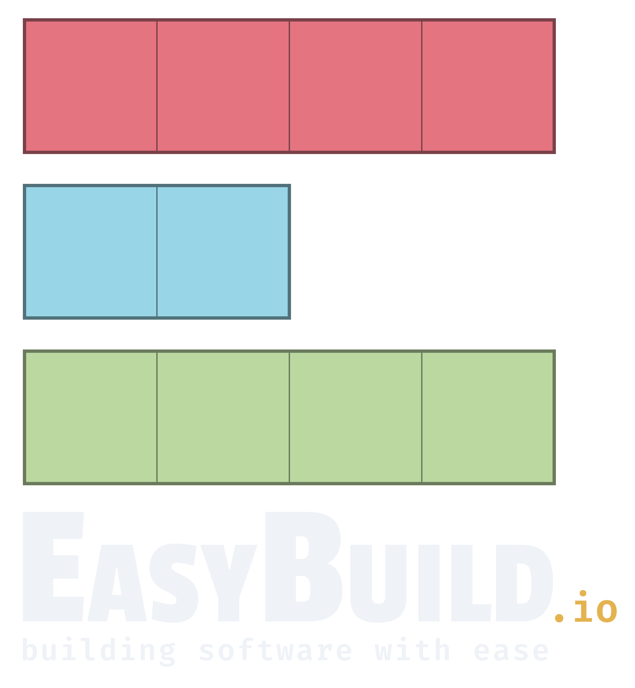
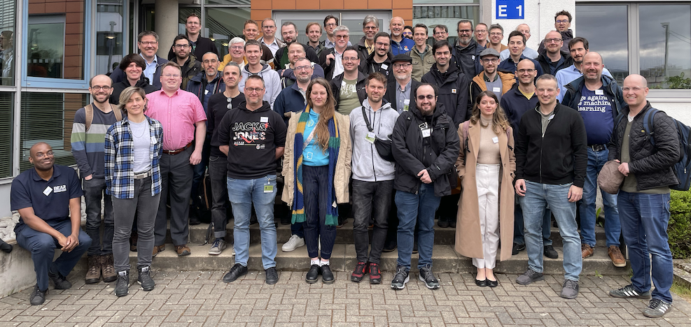

11th EasyBuild User Meeting
Tue-Thu 21-23 April 2026 @ Guimarães, Portugal
Practical info - Registration - Organisation - Program - YouTube playlist - Sponsors - Contact
News (18 Feb 2026): Initial program available | Registration is now open! Seats are limited...

(group picture from 10th EasyBuild User Meeting in Jülich - March 2025)
EasyBuild is a software build and installation framework that allows you to manage (scientific) software on High Performance Computing (HPC) systems in an efficient way.
The EasyBuild User Meeting is an open and highly interactive event that provides a great opportunity to meet fellow EasyBuild enthusiasts, discuss related topics, and learn about new aspects of the tool.
It is intended for people that are already familiar with EasyBuild, ranging from occasional users to EasyBuild core developers, maintainers, and experts. Topics will be less introductory in nature than during other events like EasyBuild tutorials.
The program includes presentations by both EasyBuild users and developers, as well as talks about open source projects relevant to the EasyBuild community.
Practical information
The 11th EasyBuild User Meeting will be held Tuesday-Thursday 21-23 April 2026 in Guimarães (Portugal), the home of the Deucalion EuroHPC system.
This is an open meeting, anybody interested is welcome to join.
Attendance is free of cost, but registration is required (see below).
Venue
Guimarães (Portugal), home of Deucalion EuroHPC JU supercomputer
- Tuesday morning (welcome, tour of Deucalion, city tour): University de Minho - Campus de Azurém
- Tuesday afternoon + Wednesday + Thursday: United Nations University (UNU-EGOV) (main venue)
Travel recommendations
- fly to Porto international Francisco Sá Carneiro airport (OPO)
- from Porto, take GET bus to Guimarães (~45min, 9 Euro)
Recommended hotels
- Hotel de Guimarães (4-star hotel, 10-min walk to main venue)
- Hotel Fundador (3-star hotel, 10-min walk to main venue)
Zoom & YouTube
We intend to provide live streaming of all presentations that are part of the EUM'26 agenda, via Zoom and the EasyBuild YouTube channel.
Remote attendees will be able to join a Zoom session for interactive discussions with the speakers.
Note that only registered attendees will have access to the Zoom session!
We also intend to record all sessions, and will make the recordings available shortly after the live presentations, via the EasyBuild YouTube channel.
Q&A via #eum channel in EasyBuild Slack
Remote attendees will be able to submit questions via the #eum channel in the EasyBuild Slack. Comments in YouTube will be disabled for the live streaming events.
If you are not logged in to the EasyBuild Slack yet, you can request an invitation to join via https://easybuild.io/join-slack.
Registration
If you plan to attend one or more presentations (on-site or remotely), you must register. Seats for on-site attendance are limited.
Although attendance is free and open to anyone, having a good view on how well the different sessions will be attended is important for us to be well prepared.
Register now via https://event.ugent.be/registration/eum26
All seats for in-person attendance are taken!
Only registration for virtual attendance (via Zoom) is still possible...
Registration (for remote attendance) will close on Sunday 19 April 2026 19:59 CEST.
Updates and practical information will be sent via email to anyone who registered.
Organisation
- Bernardo Malaca (CNCA/Deucalion, Portugal)
- Miguel Dias Costa (University of Coimbra, Portugal)
- Lara Peeters (HPC-UGent, Belgium)
- Kenneth Hoste (HPC-UGent, Belgium)
- Alan O'Cais (freelancer for HPC-UGent, Belgium)
- Simon Branford (University of Birmingham, UK)
- Paula Rodrigues (INESC TEC, Portugal)
- Catarina Fernandes (INESC TEC, Portugal)
- Fábia Pereira (INESC TEC, Portugal)
Program
The 11th EasyBuild User Meeting consists of 3 days of presentations and hands-on sessions.
Please note that all times are in Western European Summer Time (WEST), which is equivalent to UTC+1 and CEST-1.
We intentionally left ample time in between talks to allow for Q&A, interactive discussions, switching between speakers and breaks.
Useful links:All talks are in-person, unless otherwise indicated.
Overview
(subject to change!)
- Tuesday 21 April 2026
-
Welcome, Deucalion visit, city tour, lunch (in-person only)
starting from University de Minho - Campus de Azurém- [Tue 21 Apr'26 - 09:00-09:30 WEST] Meet & greet + registration
- [Tue 21 Apr'26 - 09:30-11:00 WEST] Deucalion tour
- [Tue 21 Apr'26 - 11:00-12:00 WEST] Guimarães city tour
- [Tue 21 Apr'26 - 12:00-13:00 WEST] Lunch break
-
Official start of EasyBuild User Meeting (in-person + online)
at United Nations University (UNU-EGOV)- [Tue 21 Apr'26 - 13:30-13:45 WEST (on site) , +1 hour in CEST] Welcome to the 11th EasyBuild User Meeting (EUM'26) Kenneth Hoste (Ghent University)
- [Tue 21 Apr'26 - 13:45-15:00 WEST (on site) , +1 hour in CEST] EasyBuild State of the Union Kenneth Hoste (Ghent University)
- [Tue 21 Apr'26 - 15:00-15:30 WEST (on site) , +1 hour in CEST]
coffee + networking break - [Tue 21 Apr'26 - 15:30-16:00 WEST (on site) , +1 hour in CEST] EasyBuild governance Adam Huffman (University of Oxford)
- [Tue 21 Apr'26 - 16:00-16:30 WEST (on site) , +1 hour in CEST] High Performance Software Foundation (HPSF) Massimiliano Culpo (np-complete)
- [Tue 21 Apr'26 - 16:30-17:30 WEST (on site) , +1 hour in CEST]
EasyBuild site talks
- Deucalion (Bernardo Malaca, CNCA/Deucalion)
- Vrije Universiteit Brussel (Cintia Willemyns + Jarne Renders, VUB)
- CERN (Valentin Volkl, CERN)
- [Tue 21 Apr'26 - 19:00-... WEST (in-person only)] Group dinner
- Wednesday 22 April 2026
- [Wed 22 Apr'26 - 09:00-10:00 WEST (on site), +1 hour in CEST]
EasyBuild site talks
- Baskerville - past and future (Gavin Yearwood (Univ. of Birmingham)
- Contributions to EasyBuild by INUITS (Pavel Tomanek, INUITS)
- Installing and managing an HPC center by two people
(Ole Holm Nielsen, Technical University of Denmark)
- [Wed 22 Apr'26 - 10:00-10:30 WEST (on site), +1 hour in CEST] (talk to be confirmed) speaker to be confirmed
- [Wed 22 Apr'26 - 10:30-11:00 WEST (on site) , +1 hour in CEST]
coffee + networking break - [Wed 22 Apr'26 - 11:00-11:45 WEST (on site), +1 hour in CEST] Spack Massimiliano Culpo (np-complete) + Harmen Stoppels (Stoppels Consulting)
- [Wed 22 Apr'26 - 11:45-12:30 WEST (on site), +1 hour in CEST] Installing a 3D desktop environment with EasyBuild Mikael Öhman (Chalmers University of Technology)
- [Wed 22 Apr'26 - 12:30-13:15 WEST (on site) , +1 hour in CEST] Lunch + networking break
- [Wed 22 Apr'26 - 13:15-13:45 WEST (on site), +1 hour in CEST]
Bubble wrapping EasyBuild and other ways to stage installations
Bart Oldeman (McGill University, Calcul Québec, Digital Research Alliance of Canada)
+ Samuel Moors (VUB) [remote] - [Wed 22 Apr'26 - 13:45-14:15 WEST (on site), +1 hour in CEST] Slinky on Azure Kubernetes Service - Experience Report Kris Buytaert (INUITS) + Hugo Meiland (Microsoft)
- [Wed 22 Apr'26 - 14:15-15:15 WEST (on site), +1 hour in CEST]
EasyBuild site talks
- ZIH TU Dresden (Alexander Grund (TU Dresden)
- LuxProvide (Xavier Besseron, LuxProvide)
- BASF (Thomas Eylenbosch, Gluo NV)
- [Wed 22 Apr'26 - 15:15-15:45 WEST (on site), +1 hour in CEST] EPICURE Bibek Chapagain (Barcelona Supercomputing Center)
- [Wed 22 Apr'26 - 15:45-16:15 WEST (on site) , +1 hour in CEST]
coffee + networking break - [Wed 22 Apr'26 - 16:15-16:45 WEST (on site), +1 hour in CEST] Lmod update Robert McLay (retired from TACC, US)
- [Wed 22 Apr'26 - 16:45-17:30 WEST (on site), +1 hour in CEST] flux, a next-generation resource management framework Tom Scogland (LLNL, US) - remote presentation
- [Wed 22 Apr'26 - 19:00-... WEST (in-person only)] Group dinner
- Thursday 23 April 2026 (focused on EESSI)
- [Thu 23 Apr'26 - 09:00-09:45 WEST (on site) , +1 hour in CEST] EESSI intro + status update Lara Peeters & Kenneth Hoste (Ghent University)
- [Thu 23 Apr'26 - 09:45-10:30 WEST (on site) , +1 hour in CEST] Keynote presentation by Fujitsu Satoshi Nakajima (Fujitsu)
- [Thu 23 Apr'26 - 10:30-11:00 WEST (on site) , +1 hour in CEST]
coffee + networking break - [Thu 23 Apr'26 - 11:00-11:30 WEST (on site) , +1 hour in CEST] NVIDIA + AMD GPU support in EESSI Caspar van Leeuwen (SURF)
- [Thu 23 Apr'26 - 11:30-11:50 WEST (on site) , +1 hour in CEST] EESSI CLI tool Kenneth Hoste (Ghent University)
- [Thu 23 Apr'26 - 11:50-12:30 WEST (on site) , +1 hour in CEST] JUBE: An Environment for systematic benchmarking & scientific workflows Thomas Breuer (Forschungszentrum Jülich)
- [Thu 23 Apr'26 - 12:30-13:30 WEST (on site) , +1 hour in CEST] Lunch + networking break
- [Thu 23 Apr'26 - 13:30-14:30 WEST (on site), +1 hour in CEST]
EasyBuild site talks
- Do IT Now (Nádia Martins & Aurelio Rodríguez, Do IT Now)
- University of Groningen (Pedro Santos Neves, University of Groningen)
- StackHPC (Steve Brasier, StackHPC)
- [Thu 23 Apr'26 - 14:30-15:00 WEST (on site) , +1 hour in CEST] LLVM toolchains Davide Grassano (CECAM, EPFL)
- [Thu 23 Apr'26 - 15:00-15:30 WEST (on site) , +1 hour in CEST] CernVM-FS + Kubernetes Valentin Volkl (CERN)
- [Thu 23 Apr'26 - 15:30-16:00 WEST (on site) , +1 hour in CEST]
coffee + networking break - [Thu 23 Apr'26 - 16:00-16:45 WEST (on site) , +1 hour in CEST] EuroHPC Federation Platform (EFP) Alan O'Cais (freelancer, Ghent University)
- [Thu 23 Apr'26 - 16:45-17:15 WEST (on site) , +1 hour in CEST] Future of EasyBuild, incl. outlook to EasyBuild 6.0 (+ closing) Kenneth Hoste (Ghent University)
- [Thu 23 Apr'26 - 19:00-... WEST (in-person only)] Group dinner
Sponsors
Contact
In case of questions, please contact eum@lists.ugent.be.
Previous EasyBuild User Meetings:
EUM'25 (Jülich) -
EUM'24 (Umeå) -
EUM'23 (London)
EUM'22 (virtual) -
EUM'21 (virtual) -
EUM'20 (Barcelona)
EUM'19 (Louvain-la-Neuve) -
EUM'18 (Amsterdam) -
EUM'17 (Jülich) -
EUM'16 (Ghent)